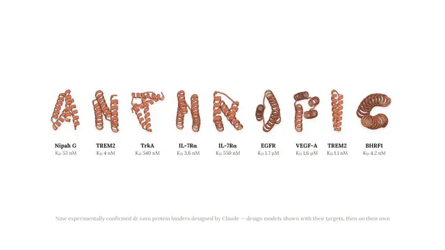

#anthropic
Claudeが創薬研究を自動化、タンパク質設計で15標的中14標的に成功

Anthropicは2026年8月18日、Claudeを生命科学研究に活用した実験結果を公表しました。タンパク質結合体の設計では15標的中14標的で実験的な結合を確認し、分析化学ではNMRとLC-MSの生データを約20分で処理しました。汎用AIが「科学を説…
一次情報（出典） anthropic.com
#anthropic

Anthropicは2026年8月18日、Claudeを生命科学研究に活用した実験結果を公表しました。タンパク質結合体の設計では15標的中14標的で実験的な結合を確認し、分析化学ではNMRとLC-MSの生データを約20分で処理しました。汎用AIが「科学を説…
一次情報（出典） anthropic.com